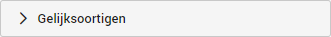
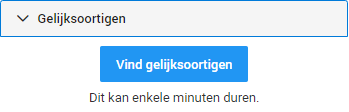
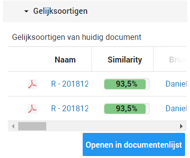

Om dubbel werk en fouten te voorkomen is het handig om bij elk document de kopieën te verwijderen.
In ZyLAB ONE is het mogelijk om kopieën en bijna-kopieën van bestanden te verwijderen of te labelen. Een document kan namelijk in een bijlage zijn verstuurd naar iemand anders waardoor deze 2 keer in de geüploade documenten is beland.
Bij het uploaden wordt er standaard gededupliceerd op Beheerder niveau. Dat houdt in dat als een bestand tweemaal onder dezelfde beheerder valt, dat een van de twee bestanden als uniek wordt beschouwd en de ander wordt verwijderd. Indien bij een andere upload hetzelfde document weer wordt geupload maar een andere beheerder wordt geselecteert, zal dit document dus niet gededupliceerd worden.
Daarnaast kan ZyLAB ook op de gehele zaak deduplicatie toepassen. Ongeacht of er verschillende beheerders zijn toegewezen worden documenten dan gededupliceerd. Normaliter worden de documenten in dit proces niet verwijderd, maar aangemerkt als duplicaat door middel van een label genaamd Duplicaat. Dit wordt vaak standaard bij Woo-verzoeken toegepast in overleg met de klant.
Daarnaast kan de Vind gelijksoortigen functionaliteit gebruikt worden om documenten te vinden die bijna met elkaar overeenkomen. Dit is handig om wellicht andere concept versies, of de definitieve versie van een concept versie te vinden.
In het Bewerkingsdashboard klikt u op Gelijksoortigen.

Vervolgens klikt u op Find Near-Duplicates om het proces te starten. Afhankelijk van de hoeveelheid documenten die zijn geüpload in ZyLAB ONE kan dit enkele minuten duren.

Vervolgens krijgt u een lijst te zien met de bestanden die overeen komen. Het weergegeven percentage staat voor de hoeveelheid aan overeenkomstigheid ten opzichte van het originele bestand.

U kunt op de bestanden klikken om gelijk naar het betreffende bestand te navigeren. Het is vaak makkelijker om de documenten te openen in een documentenlijst, zodat bepaalde zaken gemakkelijk vergelijken kunnen worden, zoals de datum van de betreffende documenten.
Kijk altijd goed wat de verschillen zijn tussen de twee bestanden. Als er bijvoorbeeld een standaard indeling is om een bepaald document op te stellen zoals bij een planning of leeg invulformulier, dan zal deze altijd een hoog gelijkheids percentage krijgen ondanks dat de bestanden qua inhoud verschillen.
Door middel van de labels kunt u de kopieën buiten het verzoek plaatsen, meer informatie hierover vindt u in het topic Voortgang bijhouden met labels.